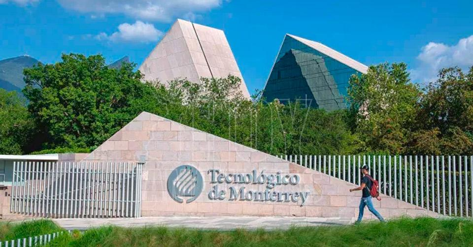
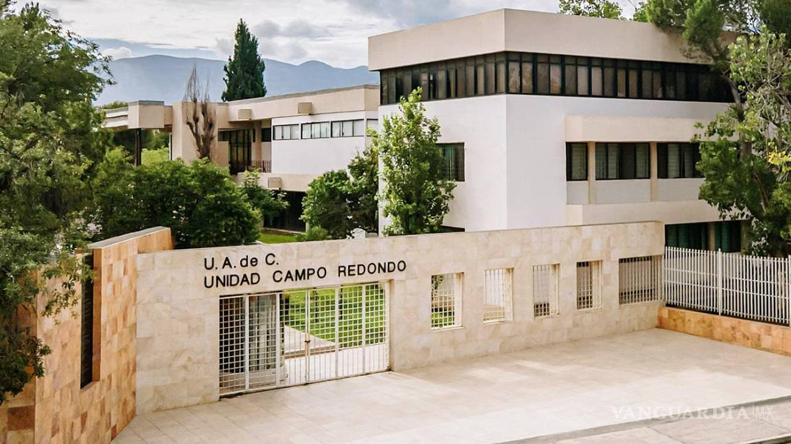

La Universidad Autónoma de Nuevo León (UANL) es la tercera universidad más grande de México, tanto en términos de matrícula como de infraestructura. Fundada en 1933, su campus principal se encuentra en la ciudad de San Nicolás de los Garza, en el área metropolitana de Monterrey.
UANL ofrece una extensa gama de programas académicos que abarcan desde nivel técnico hasta posgrado, en áreas como ciencias naturales, ingeniería, ciencias de la salud, ciencias sociales, y humanidades. Su enfoque en la investigación ha llevado a la creación de numerosos centros de investigación que trabajan en colaboración con la industria y organismos gubernamentales.
Además de su sólida oferta académica, la UANL es reconocida por su compromiso con la cultura y el deporte. El Festival Alfonsino, por ejemplo, es uno de los eventos culturales más importantes que organiza, en honor al escritor regiomontano Alfonso Reyes.
La universidad también se destaca por sus programas de internacionalización, que incluyen convenios con universidades de todo el mundo, fomentando el intercambio de estudiantes y docentes.
Instituto Tecnológico y de Estudios Superiores de Monterrey (ITESM)

Conocido comúnmente como El Tec de Monterrey, el Instituto Tecnológico y de Estudios Superiores de Monterrey (ITESM) es una de las universidades privadas más prestigiosas de Latinoamérica. Fundado en 1943 por un grupo de empresarios mexicanos, su objetivo inicial fue preparar a los jóvenes para las necesidades tecnológicas e industriales del país.
El ITESM tiene un fuerte enfoque en la educación basada en competencias, la innovación y el emprendimiento. Ofrece programas de licenciatura y posgrado en áreas como ingeniería, negocios, ciencias sociales, medicina, y artes. La institución se distingue por su enfoque en la educación a distancia y ha sido pionera en la implementación de tecnologías educativas en sus programas.
El Tec de Monterrey cuenta con numerosos campus en toda la República Mexicana, así como en otros países de Latinoamérica, Estados Unidos, y Europa. Su modelo educativo promueve la creación de empresas y proyectos de innovación, fomentando el desarrollo de habilidades empresariales en sus estudiantes.
Además, la universidad tiene una sólida reputación en el ámbito de la investigación y desarrollo tecnológico, trabajando en conjunto con instituciones y empresas globales. El Parque Tecnológico de Monterrey es un claro ejemplo de su compromiso con la innovación y el desarrollo de nuevas tecnologías.
Universidad Autónoma de Coahuila (UAdeC)

La Universidad Autónoma de Coahuila (UAdeC) es una institución pública de educación superior que juega un papel clave en el desarrollo educativo del estado de Coahuila, en el norte de México. Fundada en 1957, la universidad cuenta con campus distribuidos en diversas ciudades, incluyendo Saltillo, Torreón, y Monclova.
La UAdeC ofrece una amplia oferta académica que incluye programas de licenciatura, maestría y doctorado en áreas como ciencias naturales, ciencias sociales, ingeniería, medicina, y humanidades. La universidad se distingue por su compromiso con la investigación y la vinculación con el sector productivo, promoviendo el desarrollo regional a través de proyectos de colaboración.
La universidad también tiene un fuerte enfoque en la extensión y difusión cultural. El Ballet Folklórico de la UAdeC y la Orquesta Filarmónica son solo algunos de los grupos artísticos que destacan en la institución, contribuyendo a la vida cultural de la región.
Además, la UAdeC se preocupa por el desarrollo integral de sus estudiantes, promoviendo actividades deportivas y culturales que complementan la formación académica y fomentan un ambiente universitario dinámico y enriquecedor.